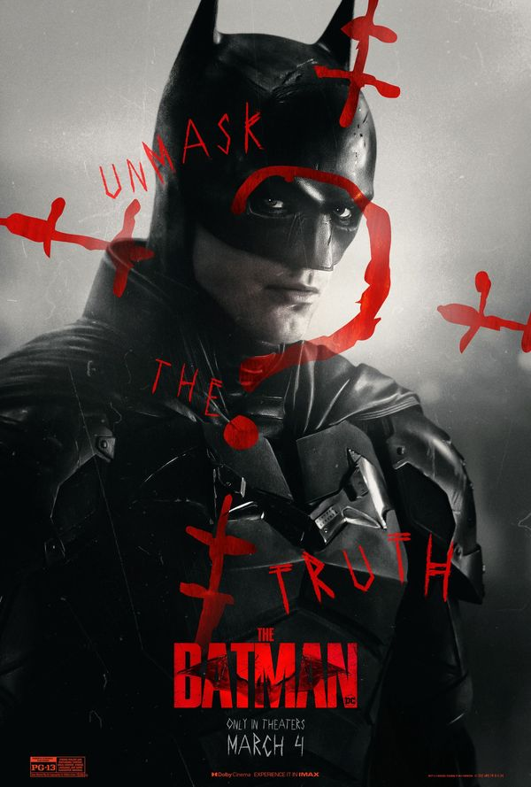

Welcome to Our Movies Platform
Explore the latest Movies!


SHAZAM
From New Line Cinema comes “Shazam! Fury of the Gods,” which continues the story of teenage Billy Batson who, upon reciting the magic word “SHAZAM!,” is transformed into his adult Super Hero alter ego, Shazam. “Shazam! Fury of the Gods” stars returning cast members Zachary Levi (“Thor: Ragnarok”) as Shazam; Asher Angel (“Andi Mack”) as Billy Batson; Jack Dylan Grazer (“It Chapter Two”) as Freddy Freeman; Adam Brody (“Promising Young Woman”) as Super Hero Freddy; Ross Butler (“Raya and the Last Dragon”) as Super Hero Eugene; Meagan Good (“Day Shift”) as Super Hero Darla; D.J. Cotrona (“G.I. Joe: Retaliation”) as Super Hero Pedro; Grace Caroline Currey (“Annabelle: Creation”) as Mary Bromfield / Super Hero Mary; Faithe Herman (“This Is Us”) as Darla Dudley; Ian Chen (“A Dog’s Journey”) as Eugene Choi; Jovan Armand (“Second Chances”) as Pedro Pena; Marta Milans (“White Lines”) as Rosa Vasquez; Cooper Andrews (“The Walking Dead”) as Victor Vasquez; with Djimon Hounsou (“A Quiet Place Part II”) as Wizard.
Learn More
